Об артисте
«Конъюнктура» — российская инди-группа из Санкт-Петербурга, основанная в 2017 году.
Жанр
Инди-рок, лоу-фай, шугейз, арт-рок, постпанк.
История
Группа «конъюнктура» образовалась в Санкт-Петербурге в 2017 году. В её основе стоит творческий и
личный тандем Шоши Менаховской (автор песен, вокал, гитара) и Ильи Сахарова (барабаны). Сами
музыканты иронично описывали свой ранний стиль как «bedroom recording новой еврейской волны» —
музыку, которая рождалась в домашних условиях и несла в себе меланхоличное, интимное звучание.
Первые релизы группы, такие как мини-альбом «самосожжение» (2018) и полноформатный «strahno» (2019),
зафиксировали узнаваемый почерк «конъюнктуры»: сырой лоу-фай звук, обилие гитарных эффектов и
глубокие, рефлексирующие тексты Шоши. Музыканты быстро стали заметными фигурами на петербургской
независимой сцене.
Важной вехой в истории коллектива стало создание собственного инди-лейбла loser music. Через него
Шоша и Илья начали не только выпускать свою музыку, но и объединять вокруг себя единомышленников,
помогая другим локальным артистам. В 2022 году эта деятельность переросла в масштабный проект — они
организовали собственный независимый фестиваль «Саммер Мьюзик Викенд» (СМВ), который стал ежегодным
летним событием для любителей инди-культуры.
С годами звучание группы трансформировалось, уходя от чистого лоу-фая в сторону более сложного,
чистого и масштабного арт-рока и шугейза. Это отчётливо проявилось на альбоме «пепел» (2022) и
закрепилось в масштабном релизе «керамика» (2024). Группа регулярно выступает на крупных российских
инди-фестивалях (таких как Motherland и Stereoleto), завоевывая признание критиков и номинации в
культурных премиях за вклад в развитие современной независимой сцены.
Состав
- Шоша Менаховская — вокал, гитара
- Илья Сахаров — барабаны
- Иван Мельниченко — синтезатор, перкуссия
- Владимир Еловков — гитара
- Роман Павлов — бас-гитара
Концерты
29.12.2025 · Санкт-Петербург · Клуб Ласточка
Этот концерт проходил в рамках фестиваля «Супер Мьюзик Викенд» (СМВ), и
конъюнктура была его хедлайнером. Я ждала их выступления весь вечер, и оно полностью оправдало
ожидания: живой звук, энергия зала и ощущение, что все вокруг пришли ради одного и того же. Из
клуба я ушла очень довольной и с новыми знакомыми: на фестивале я разговорилась с людьми, с
которыми мы до сих пор общаемся.
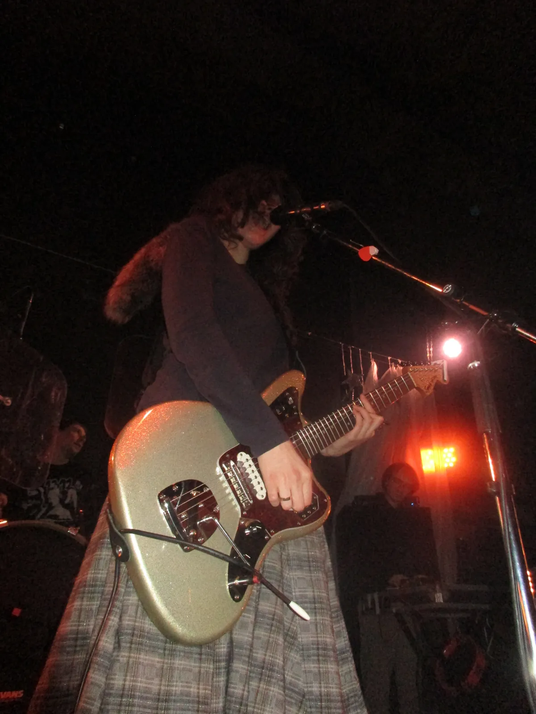
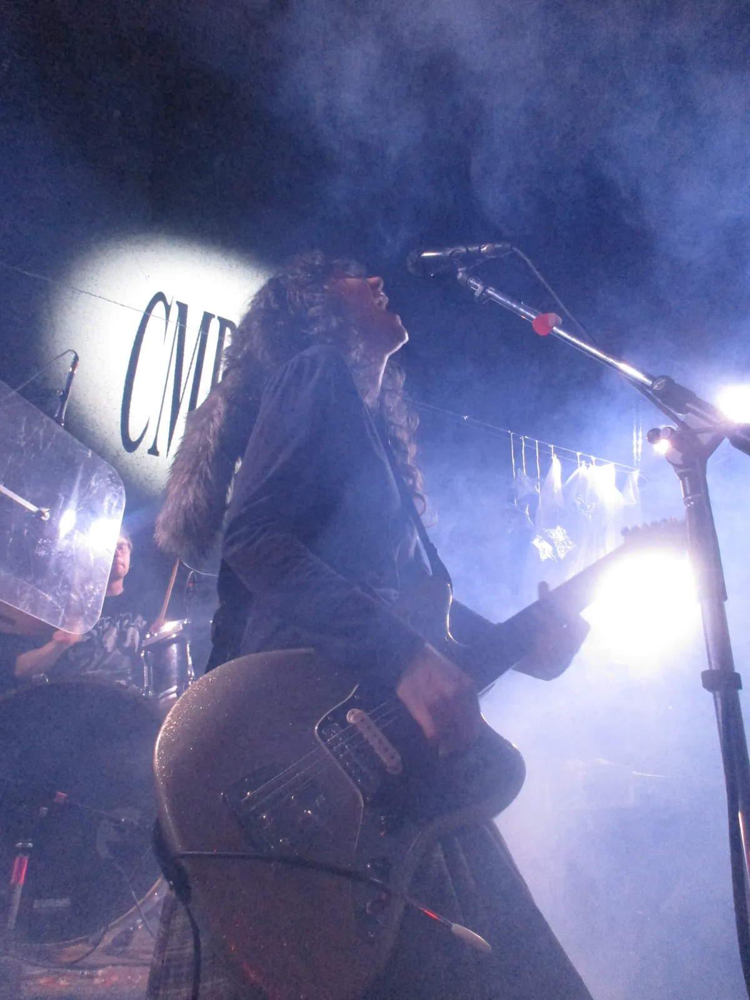
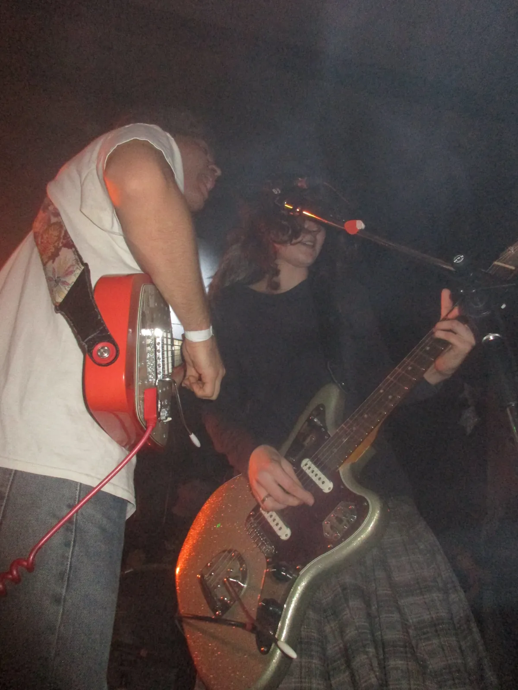
11.06.2026 · Санкт-Петербург · Дом еврейской культуры ЕСОД
Этот концерт был совсем не похож на обычное клубное выступление. Музыку
сопровождал настоящий перформанс: на сцене выступали приглашённые танцоры, а песни звучали
вместе с камерным оркестром. Знакомые композиции в таком исполнении раскрылись совершенно
по-новому. А ещё группа впервые представила песни, которые тогда ещё не вышли, и было особенно
приятно услышать их одной из первых.
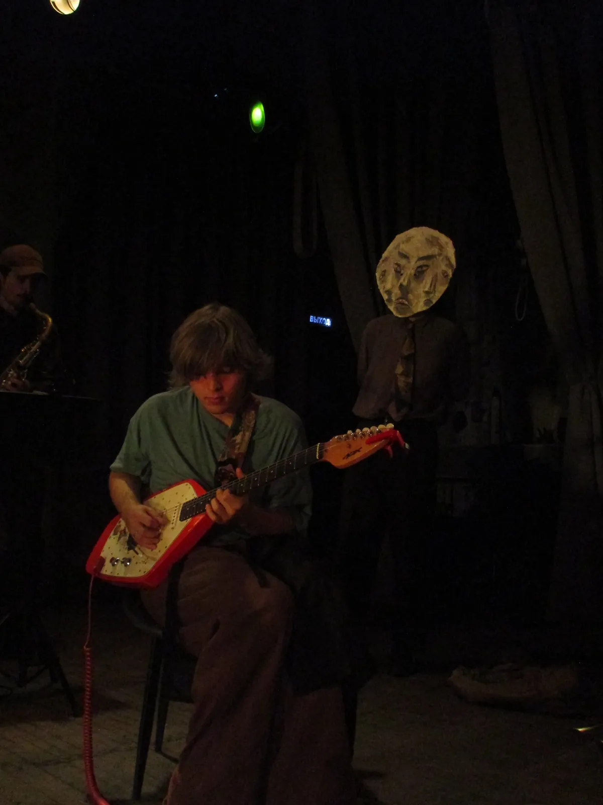
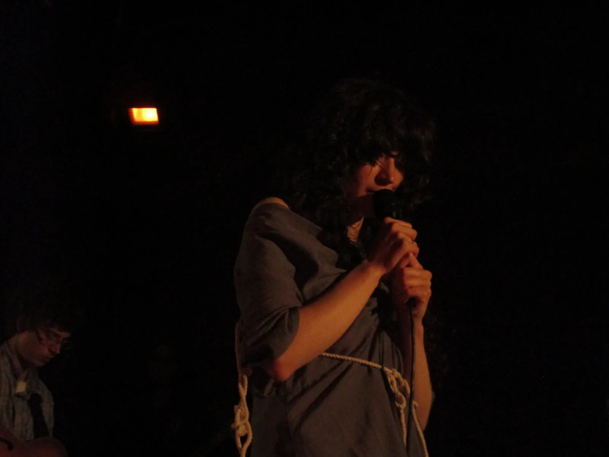
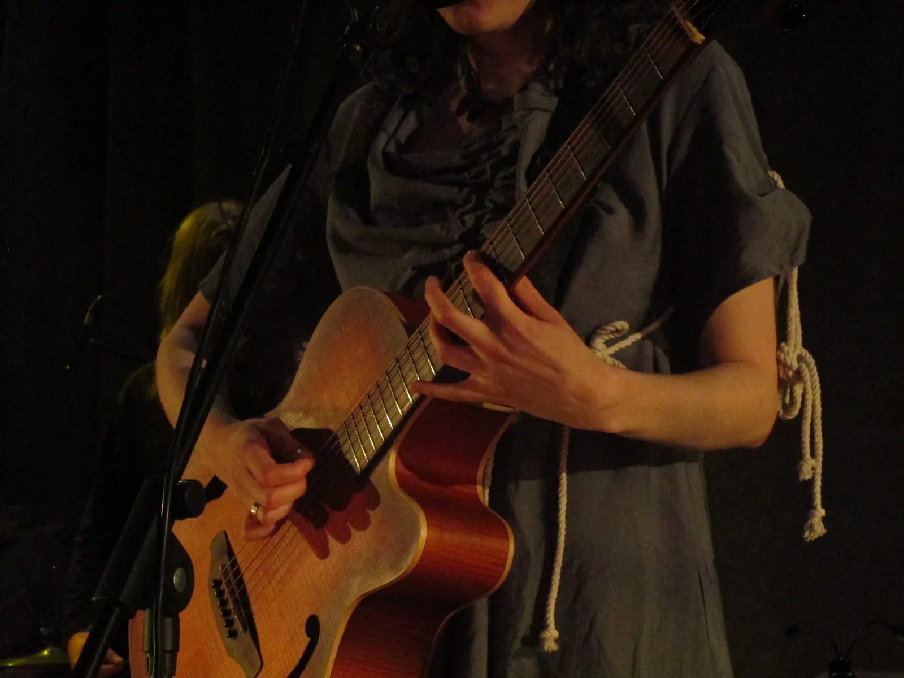
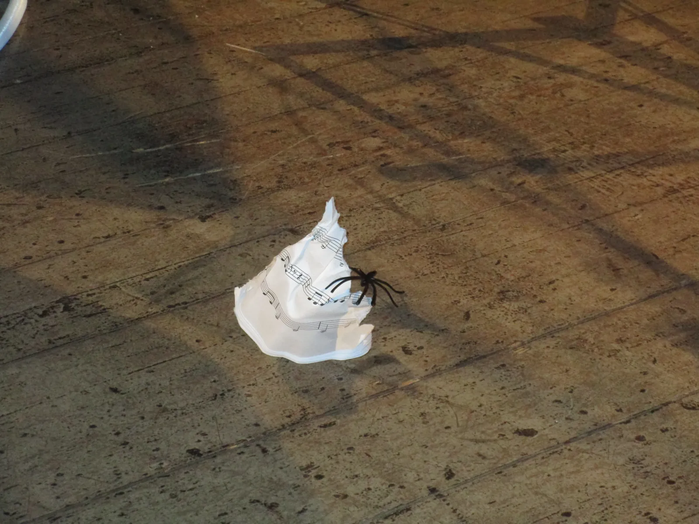
23.08.2026 · Санкт-Петербург · Клуб Ласточка
Летом я снова попала на конъюнктуру в рамках фестиваля «Саммер Мьюзик
Викенд» (СМВ). Группа опять исполнила новые песни, и я заметила, что теперь зал подпевал им
вместе со старыми. Самым запоминающимся моментом стал финал: на сцену вышли все, кто выступал на
фестивале, и танцевали вместе с публикой. Это был очень тёплый и радостный вечер, ради которых я
и хожу на концерты.
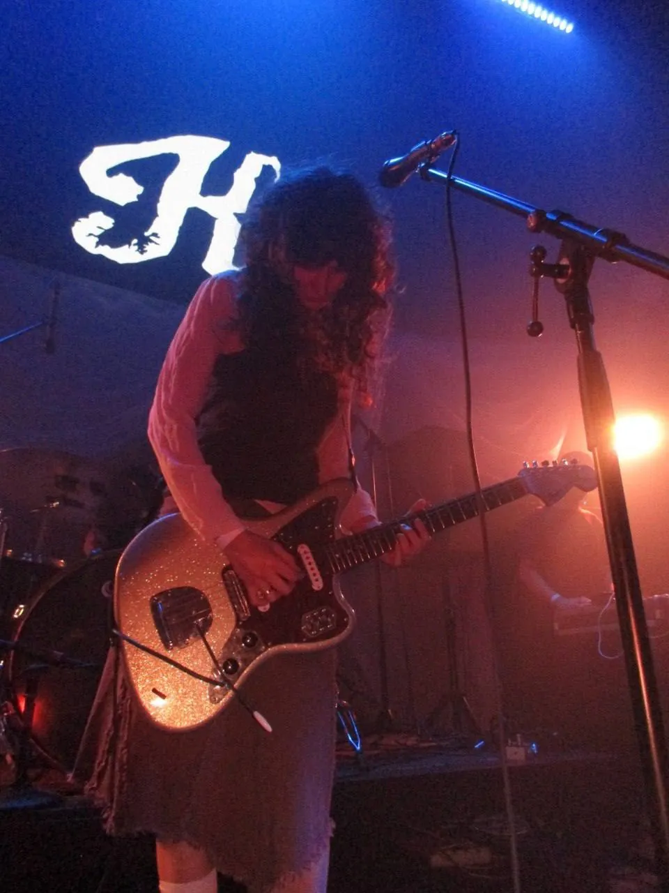
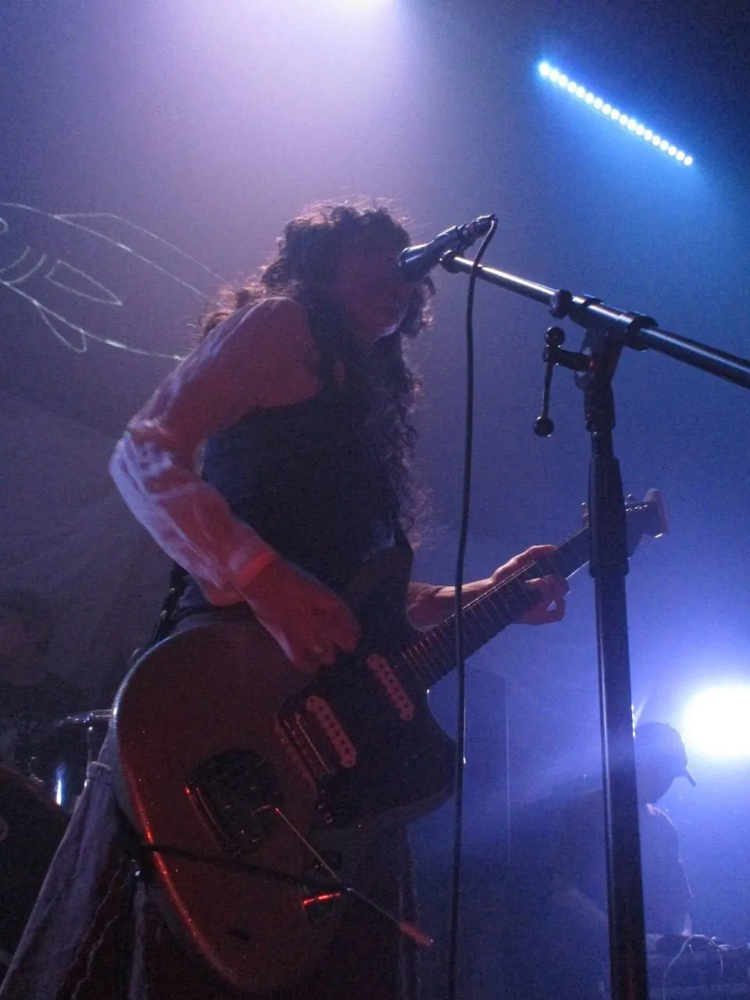
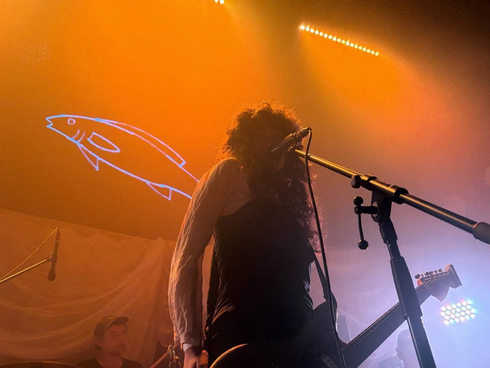
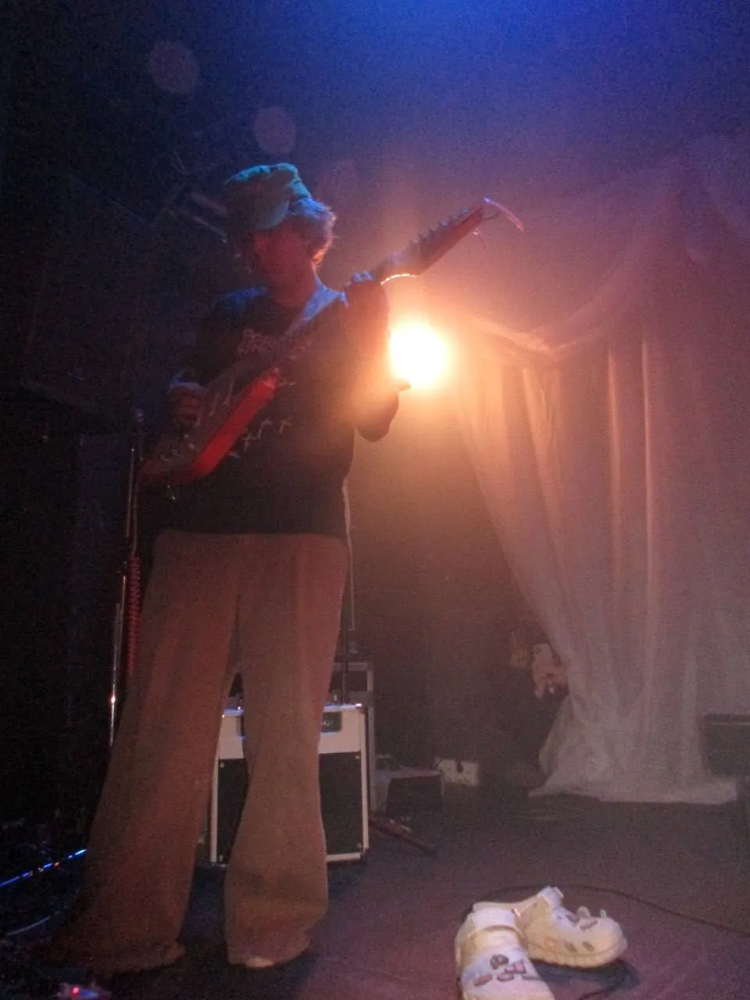